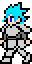
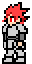
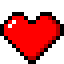
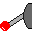
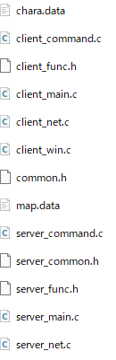
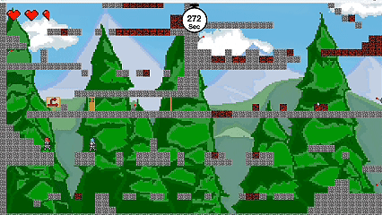

1. Hurry Up（2人協力型2D縦スクロールアクションゲーム）
概要
ネットワーク通信による2人協力型の2D縦スクロールアクションゲームです。
制限時間内に2人で協力し、コミュニケーションを取りながら、最上部を目指そう！
自分の役割
メインプログラマー
ネットワーク通信担当2名、デザイナー1名、メインプログラマー1名の4名体制で開発。キャラクターの移動・アクション挙動、当たり判定（衝突判定）、縦スクロール描画処理、マップデータの構築など、ゲームの根幹を担う主要システムの開発を担当しました。
使用技術・開発環境
面白くしたポイント


2人の協力が不可欠なゲーム進行：互いにコミュニケーションを取り合って進行する連携設計
迫りくるタイマーとHP共有によるハラハラ感：制限時間とHP共有が生み出すスリルと緊張感
レバー操作による協力ギミック：レバーを切り替えてステージの仕掛けを動かし、2人で相互に操作し合いながら道を切り拓く仕掛け
技術的な工夫
-
モジュール分割による可読性の向上：ヘッダー、メイン処理、キャラクターデータ、マップデータ等を分離し可読性を向上

- 高精度な当たり判定の実装：判定を上半身と下半身に分割して精度を上げ、壁のすり抜け現象を防止
-
自プレイヤー追従の画面スクロール：通信相手ではなく「自分の操作キャラクター」の動きに合わせて画面が縦スクロールする追従機能
